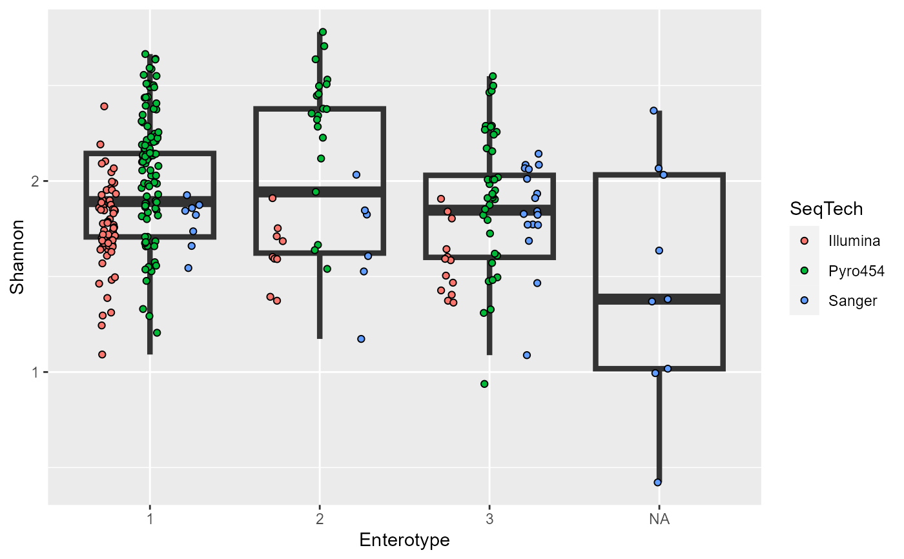

alpha_diversity.RdThis function will rapidly plot alpha diversity in ggplot2.
alpha_diversity(
physeq,
measure = "Shannon",
x,
group = NULL,
plot_type = "boxplot",
stat = FALSE,
check_depth = F,
size = 1.5
)A phyloseq object
The type of alpha diversity measure you wish to use. These are directly taken from estimate_richness.
String character to display on X axis
String character to color/fill by.
For the moment the function accepts "line" or "boxplot". Default = "boxplot"
Logical. Show stats or not. Default= FALSE.
Logical. Only for integers count, doesn't work with relative abundance. Will create two plots :
a first one being a boxplot based ggplot with depth as size of the jitters
a second one being a dotplot with alpha diversity measure on Y and the depth on X.
Numeric value for the dot size and line width.
Return a ggplot graphic.
data(enterotype)
alpha_diversity(enterotype, measure="Shannon", x="Enterotype", group="SeqTech", plot_type="boxplot")
#> Warning: The data you have provided does not have
#> any singletons. This is highly suspicious. Results of richness
#> estimates (for example) are probably unreliable, or wrong, if you have already
#> trimmed low-abundance taxa from the data.
#>
#> We recommended that you find the un-trimmed data and retry.

# same analysis but with check_depth
alpha_diversity(GlobalPatterns, measure="Shannon", x="SampleType", plot_type="boxplot", check_depth=T)
#> Error in h(simpleError(msg, call)): error in evaluating the argument 'object' in selecting a method for function 'otu_table': object 'GlobalPatterns' not found